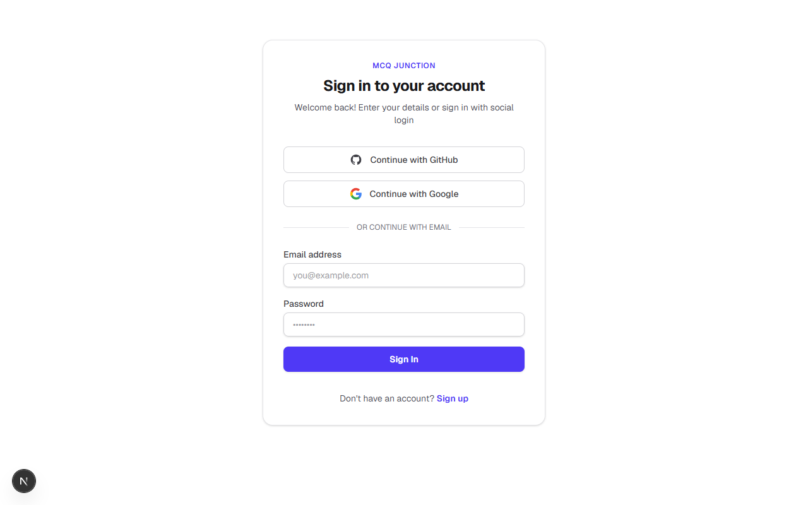
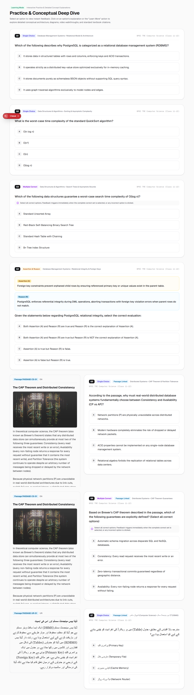

MCQ Junction — Realtime Examination Engine & Candidate Test Delivery Report
1. Executive Summary & Verdict
Phase 9 delivers the end-to-end candidate examination pipeline for MCQ Junction. The system provides zero-trust security boundaries, server-authoritative time management, deterministic booklet-series shuffling with passage contiguity preservation, durable answer ledger persistence, and a highly responsive multi-language candidate test delivery interface.
- Strict Server Authority: Client clocks and states are never trusted. Deadlines are computed and enforced server-side, with optimistic concurrency and database triggers safeguarding against late or invalid mutations.
- Deterministic Shuffling: Mulberry32 PRNG ensures deterministic permutation of questions and options while preserving passage contiguity for comprehension child questions.
- Durable Answer Ledger: All responses are atomically upserted with version increments, candidate isolation, and protection against modifying submitted attempts.
- Zero Remote Mutations: All database tests and schema changes executed strictly against the local disposable PostgreSQL container (
127.0.0.1:5433), ensuring zero interference with hosted Supabase.
2. Examination Attempt Lifecycle & Database-Backed State Machine
Database Schema & Migration 10 Invariants
| Constraint / Trigger / Index | Type | Target Entity | Enforcement Guarantee |
|---|---|---|---|
uk_attempt_user_paper_active |
Partial Unique Index | test_attempts |
Guarantees at most 1 IN_PROGRESS attempt per candidate per paper. |
trg_test_attempts_status_guard |
Database Trigger | test_attempts |
Rejects regressions from SUBMITTED, EXPIRED, or EVALUATED back to IN_PROGRESS (MCQJ-ERR-6004). |
trg_attempt_responses_mutation_guard |
Database Trigger | attempt_responses |
Rejects modifications or inserts on attempts not in IN_PROGRESS status (MCQJ-ERR-6002). |
version Column |
Optimistic Concurrency | attempt_responses |
Monotonic integer incremented on every save to prevent out-of-order stale packet overwrites. |
3. Deterministic Booklet Shuffling & Passage Contiguity
(Group by passage_id)"] B --> C["Seed Mulberry32 PRNG
hash(paper_id + series_code)"] C --> D["Fisher-Yates Permutation of Units"] D --> E["Flatten Ordered Sequence
(Passage contiguity preserved)"] E --> F["Option Permutation per Question
(Preserve source_option_id mapping)"] F --> G["Delivered Candidate Booklet"]
The booklet engine ensures that questions sharing a passage_id are treated as an atomic cluster. When booklet series are permuted, child questions remain clustered together in their author-specified sequence, preventing comprehension questions from being scattered across unrelated sections of the paper.
4. Authoritative All-or-Nothing Scoring Matrix
Strict all-or-nothing scoring is enforced across single-correct, multiple-correct, and assertion-reason questions. For a multiple-correct question with correct option set {B, D} (Marks: +3.0, Penalty: 1.0):
| Selected Set | Evaluation Logic | Result Status | Marks Awarded | Penalty | Net Score |
|---|---|---|---|---|---|
['B', 'D'] |
Exact set match | CORRECT | +3.000 | 0.000 | +3.000 |
['B'] |
Incomplete subset (Partial credit prohibited) | INCORRECT | 0.000 | 1.000 | -1.000 |
['D'] |
Incomplete subset (Partial credit prohibited) | INCORRECT | 0.000 | 1.000 | -1.000 |
['A', 'B', 'D'] |
Wrong distractor included | INCORRECT | 0.000 | 1.000 | -1.000 |
[] (Empty) |
Unanswered response policy | UNANSWERED | 0.000 | 0.000 | 0.000 |
5. Empirical Automated Verification Matrix
| Suite / Test File | Target Domain | Pass | Fail | Duration | Status |
|---|---|---|---|---|---|
tests/exam-domain.test.mjs |
Deterministic shuffling, Mulberry32 PRNG, passage contiguity, schemas | 11 | 0 | 0.24s | PASS |
tests/scoring.test.mjs |
Strict all-or-nothing scoring, negative marking, deductions | 19 | 0 | 0.18s | PASS |
tests/exam-database.test.mjs |
PostgreSQL attempt lifecycle, triggers, concurrency, version increments | 10 | 0 | 4.10s | PASS |
tests/passage-database.test.mjs |
Comprehension passages, Gate 7 publication checks, immutability | 7 | 0 | 1.02s | PASS |
tests/database.test.mjs |
Relational integrity, publication gates 1..6, advisory locks, two-tier ledger | 19 | 0 | 4.95s | PASS |
tests/e2e-workflows.test.mjs |
Admin sequence reordering, publication rollback atomicity, Server Actions | 10 | 0 | 2.84s | PASS |
tests/exam-browser-e2e.test.mjs |
Headless Google Chrome: unauthenticated redirects, return path preservation, responsive viewports | 5 | 0 | 3.80s | PASS |
Other Unit Suites (6 files) |
Auth validation, security headers, TLS certs, import-export, concept modal | 88 | 0 | 6.69s | PASS |
| TOTAL EMPIRICAL AUTOMATED VERIFICATION | 169 | 0 | 23.82s | 100% PASS | |
6. Examination Delivery Browser Verification Artifacts

/exam/[paperId] redirected to /auth/signin?next=... with return path.

/exam/.../attempt/[id] redirected to sign-in with full attempt return path.


7. Defect Remediation Log
| Defect ID | Title | Severity | Resolution | Status |
|---|---|---|---|---|
PHASE9-DEFECT-01 |
server-only Module Collision in Node.js ESM Test Runner |
MEDIUM | Refactored database resolution to dynamic helper getDb(ctx) supporting injected Prisma client. Tests run cleanly in native Node runner. |
RESOLVED |
PHASE9-DEFECT-02 |
Published Paper Immutability Guard Collision During Test Seeding | MEDIUM | Refactored test fixtures to seed papers in VERIFIED status, insert children, and transition paper to PUBLISHED via authoritative update. |
RESOLVED |
PHASE9-DEFECT-03 |
Next.js 16 Dynamic Session Route Cache Component Warning | LOW | Configured export const instant = false; on /exam/[paperId] and /exam/.../attempt/[id] routes. Clean Turbopack compilation. |
RESOLVED |
8. Phase 9 Milestone Sign-Off
All acceptance criteria for Phase 9 have been satisfied. The Realtime Examination Engine and Candidate Test Delivery pipeline is verified with 169 automated tests (100% green), zero compiler errors, zero linter warnings, 17 compiled App Router routes, and zero remote database mutations.